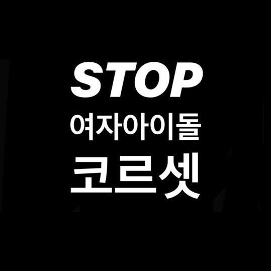

이 계정은 마마무의 백래시를 공론화하고 코르셋을 지양하기 위해 만들어졌습니다. 성적대상화가 없는 무대를 지지하는 팬덤 내 문화를 지향합니다. | #나부터_코르셋_불매#무무부터_코르셋_불매
마마무 백래시·코르셋 공론화는 마마무에게 부여되는 코르셋에 대해 논의하기 위해 무무 개인들이 모여 만든 프로젝트팀이다.1 마마무의 소속사가 지속적으로 추구하는 유아퇴보적인 성적 대상화 콘셉트와 그로 인해 촉발되는 백래시, 더불어 팬덤 내 문화에 대해 이야기하고자 하는 목적으로 개설되었다. 2019년 1월부터 4월까지 카드뉴스 제작, 해시태그 총공, 소속사 메일 및 팩스 총공 등 다양한 활동을 진행하였다. |  마마무 백래시·코르셋 공론화 계정(@stopbacklashMMM)의 프사 |
공식계정을 통해 밝혀진 프로젝트팀의 스탠스는 다음과 같다.
그 외 프로젝트팀의 스탠스에 대한 구체적인 설명은 이 링크의 트위터 타래를 통해 확인할 수 있다.